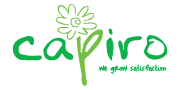

<style>
    .navbar-default {
        background-color: rgb(240, 240, 240);
        border-color: #0d090f;
    }
    
    .navbar-default .navbar-brand {
        color: #ecf0f1;
    }
    
    .navbar-default .navbar-brand:hover,
    .navbar-default .navbar-brand:focus {
        color: #f8f2ff;
    }
    
    .navbar-default .navbar-text {
        color: #ecf0f1;
    }
    
    .navbar-default .navbar-nav>li>a {
        color: #000000;
    }
    
    .navbar-default .navbar-nav>li>a:hover,
    .navbar-default .navbar-nav>li>a:focus {
        color: #000000;
    }
    
    .navbar-default .navbar-nav>.active>a,
    .navbar-default .navbar-nav>.active>a:hover,
    .navbar-default .navbar-nav>.active>a:focus {
        color: #f6efff;
        background-color: rgb(145, 181, 53);
    }
    
    .navbar-default .navbar-nav>.open>a,
    .navbar-default .navbar-nav>.open>a:hover,
    .navbar-default .navbar-nav>.open>a:focus {
        color: #f8f1ff;
        background-color: rgb(100, 163, 60);
    }
    
    .navbar-default .navbar-toggle {
        border-color: rgb(100, 163, 60);
    }
    
    .navbar-default .navbar-toggle:hover,
    .navbar-default .navbar-toggle:focus {
        background-color: rgb(100, 163, 60);
    }
    
    .navbar-default .navbar-toggle .icon-bar {
        background-color: #ecf0f1;
    }
    
    .navbar-default .navbar-collapse,
    .navbar-default .navbar-form {
        border-color: #ecf0f1;
    }
    
    .navbar-default .navbar-link {
        color: #ecf0f1;
    }
    
    .navbar-default .navbar-link:hover {
        color: #f5ebff;
    }
    
    @media (max-width: 767px) {
        .navbar-default .navbar-nav .open .dropdown-menu>li>a {
            color: #ecf0f1;
        }
        .navbar-default .navbar-nav .open .dropdown-menu>li>a:hover,
        .navbar-default .navbar-nav .open .dropdown-menu>li>a:focus {
            color: #f6efff;
        }
        .navbar-default .navbar-nav .open .dropdown-menu>.active>a,
        .navbar-default .navbar-nav .open .dropdown-menu>.active>a:hover,
        .navbar-default .navbar-nav .open .dropdown-menu>.active>a:focus {
            color: #f5ebff;
            background-color: rgb(100, 163, 60);
        }
    }
</style>

<nav class="navbar navbar-default navbar navbar-expand-lg navbar-static-top navbar-fixe-top" hover="success">
    <a class="navbar-brand" href="#"></a>
    <div class="collapse navbar-collapse" id="navbarText">
        <ul class="navbar-nav mr-auto">
            <li class="nav-item" routerLinkActive="active" *ngIf="login">
                <a class="nav-link" routerLink="/cap/home">Reporte de conteos consolidados </a>
            </li>
            <li class="nav-item" routerLinkActive="active" *ngIf="login">
                <a class="nav-link" routerLink="/cap/conteo-consolidados">Reporte preliminar</a>
            </li>
            <li class="nav-item" routerLinkActive="active" *ngIf="login">
                <a class="nav-link" routerLink="/cap/red">Con red</a>
            </li>
        </ul>
        <a style="background:border-box;" (click)="salir()" class="btn btn-outline-success">Salir</a>

    </div>
</nav>